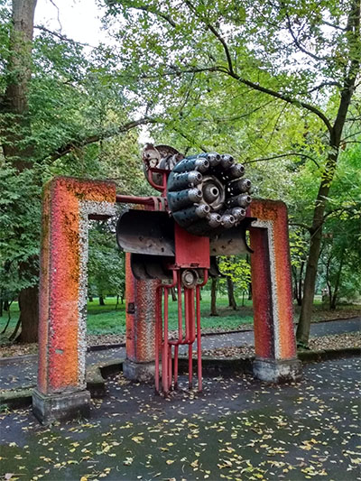

See Perspective control at Wikipedia
With Lens you can correct perspective distortion of objects on photo.
Look at this photo of art object:
It looks like sculpture is 'falling':
Let's correct this with Perspective Distortion. I've marked control points that we will use. Magenta points (1, 2) are staying still. And points 3 and 4 are moving from their original position (green) to the new position (red).
Let's apply that perspective transform and see what we will get (see the source code of the page).
As you can see, there's no more falling effect, but some empty area appeared. And you may not noticed it, but part of image at the top was cropped. If you look at the source code of this example, I will show you how you can calculate viewport for this distortion so that distorted image will already be cropped properly.
^ Perspective Distortion